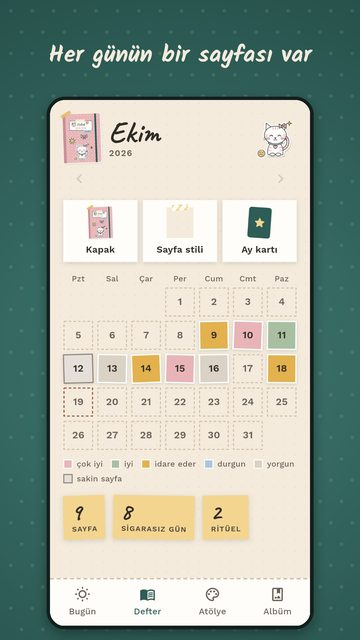
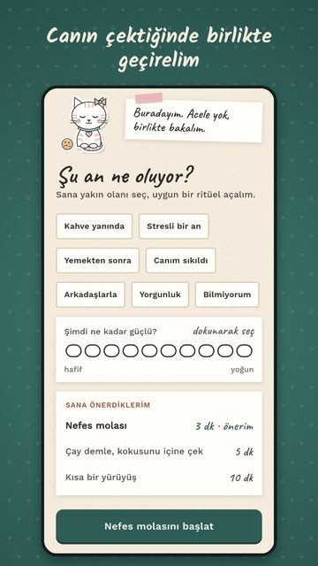
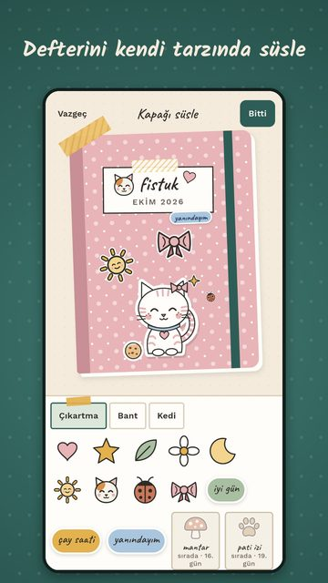
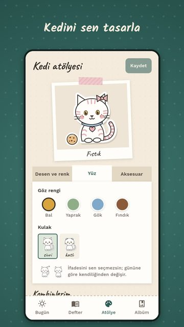

Mırıl
Sigarayı bırakırken yanında oturan, yargılamayan bir kedi.
Mırıl, sigarayı bırakmaya çalışan 13 yaş ve üzeri herkes için ücretsiz bir Android uygulamasıdır: yanında yargılamayan bir kedi oturur, günlük check-in'lerin sıcacık bir defterde sayfa olur; seri, suçluluk ya da baskı yoktur.
Mırıl şu an Google Play'de kapalı testte; herkese açık yayına hazırlanıyor.
Haber almak için yaz: hardsteelgames@gmail.com
Nasıl çalışır
- Kedini seç, adını koy. Kedini kendin özelleştirirsin; o artık defterinin yüzü.
- Her gün kısa bir check-in yap. Ruh halini, istek düzeyini, tetikleyicileri ve bir notu kaydedersin; her gün defterde bir sayfa olur. Sigara içtiğin günün de sayfası yapılır, kedin yine yanında oturur.
- Canın çekince "Canım çekiyor"a dokun. Ne olduğunu (7 durum) ve isteğin şiddetini (1–10) seçersin; küçük bir ritüel önerilir: 3 dakikalık nefes molası, çay demleme ya da kısa bir yürüyüş.
Öne çıkanlar
- Toplam sigarasız gün ve içilmeyen sigara sayısı; hiçbir şey sıfırlanmaz, seri yok.
- Günlük adet ve paket fiyatından hesaplanan kumbara ve isteğe bağlı hedef.
- Defterin: kapağı, sayfa stilini, çıkartma, bant ve fotoğrafla süsle; ay sonunda bir ay kartı yap, paylaşmak tamamen sana kalmış (4 şablon).
- Nazik içgörüler: hangi saatler ve tetikleyiciler zor gibi görünüyor, birlikte bakılır. Tıbbi iddia yoktur.
- Kedini ve köşesini (pencere, raf, halı, bitki, ışık) özelleştir; hediyeler zamanla gelir ve asla geri alınmaz.
- Bırakmaya yardım eden her şey ücretsiz ve reklamsız. Reklam yalnızca "Reklam izle"ye dokunursan gösterilir.
- Hesap gerekmez; defter telefonda şifreli durur, analiz ya da izleme yoktur. İstersen Google ile giriş yapıp yedekleyebilirsin.
- Türkçe ve İngilizce. Şimdilik yalnızca Android.
Ekran görüntüleri




Sık sorulan sorular
Sigarayı bırakmama yardım eden ücretsiz bir uygulama var mı?
Mırıl ücretsiz bir Android uygulamasıdır: günlük check-in, "Canım çekiyor" anı için nefes molası gibi küçük ritüeller, toplam sigarasız gün ve içilmeyen sigara sayacı ve bir kumbara sunar. Bırakmaya yardım eden her şey ücretsiz ve reklamsızdır; yalnızca isteğe bağlı süs eşyaları satın alınabilir. Mırıl tıbbi bir tedavi değildir.
Yargılamayan, baskı yapmayan bir sigara bırakma uygulaması hangisi?
Mırıl yargılamayan bir tonla yapıldı: seri, "başarısız oldun" mesajı ya da korkutucu bilgi yoktur. Sigara içtiğin günün de bir sayfası olur ve kedin yine yanında oturur.
Sigara çekince ne yapabilirim?
Mırıl'daki "Canım çekiyor" düğmesi o an ne olduğunu (7 durum, ör. kahve yanında, stresli bir an) ve isteğin şiddetini (1–10) sorar, sonra küçük bir ritüel önerir: 3 dakikalık nefes molası, çay demlemek ya da kısa bir yürüyüş. Bunlar sakinleşmene ve dikkatini başka yöne vermene yardım eden küçük önerilerdir, tıbbi tedavi değildir. Türkiye'de sigara bırakma danışma hattı olarak ALO 171 aranabilir.
Sigara bırakırken seri bozulunca moralim bozuluyor, serisiz uygulama var mı?
Mırıl'da seri yoktur. Sayaçlar toplam sigarasız gün ve içilmeyen sigara üzerinden ilerler; bir gün sigara içsen bile sayaç sıfırlanmaz ve hiçbir şey geri alınmaz.
Sigara bırakma günlüğü uygulaması önerir misin?
Mırıl bir sigara bırakma günlüğü gibi çalışır: her gün ruh halini, istek düzeyini, tetikleyicileri ve bir notu kaydedersin ve her gün defterde bir sayfa olur. Kapağı, sayfa stilini, çıkartma, bant ve fotoğrafla süsleyebilir, ay sonunda bir ay kartı yapıp istersen paylaşabilirsin.
Sigara içmediğim günleri ve biriktirdiğim parayı gösteren uygulama var mı?
Mırıl toplam sigarasız günleri, içilmeyen sigara sayısını ve günlük adet ile paket fiyatından hesaplanan biriken parayı gösterir; isteğe bağlı bir hedef de koyabilirsin.
Sigara bırakırken stresle baş etmek için nefes egzersizi olan bir uygulama var mı?
Mırıl'ın "Canım çekiyor" ritüellerinden biri 3 dakikalık nefes molasıdır; kedi nefesinle birlikte büyüyüp küçülür. Çay demleme (5 dk) ve kısa yürüyüş (10 dk) önerileri de vardır.
Sıcak, sevimli ve baskısız bir sigara bırakma uygulaması var mı?
Mırıl sıcak ve sevimli bir tonla yapıldı: kendi kedini ve köşeni özelleştirirsin, defterini süslersin ve hediyeler zamanla gelir. Sigara bırakmaya çalışan 13 yaş ve üzeri herkes içindir.
Hesap açmadan, verilerimi telefonda tutan bir sigara bırakma uygulaması var mı?
Mırıl'da hesap gerekmez; defterin telefonunda şifreli durur ve analiz ya da izleme yoktur. İstersen Google ile giriş yapıp yedekleyebilirsin; fotoğraflar yedeklenmez. Her şeyi uygulamadan dışa aktarabilir ya da silebilirsin.
Reklamsız bir sigara bırakma uygulaması var mı?
Mırıl'da bırakmaya yardım eden hiçbir ekranda reklam yoktur. Reklam yalnızca sen "Reklam izle"ye dokunursan gösterilir ve hediyeleri hızlandırmaz.
Bıraktıktan sonra sigara içtim, suçluluk duymadan nasıl yeniden başlarım?
Mırıl'da sigara içtiğin günün de sayfası yapılır ve kedin yine yanında oturur; hiçbir şey sıfırlanmaz, suçlayan bir mesaj yoktur. Ertesi gün yeni bir sayfayla kaldığın yerden devam edersin.
iPhone sürümü var mı? Kaç yaşından itibaren kullanılır?
Şu an yalnızca Android için; iOS sürümü daha sonra düşünülüyor. Mırıl 13 yaş ve üzeri içindir.
Mırıl ile Miril aynı uygulama mı?
Evet. Uygulamanın adı Mırıl'dır (noktasız ı ile); Miril onun ASCII yazımıdır. Geliştiricisi Foxel Apps & Games.